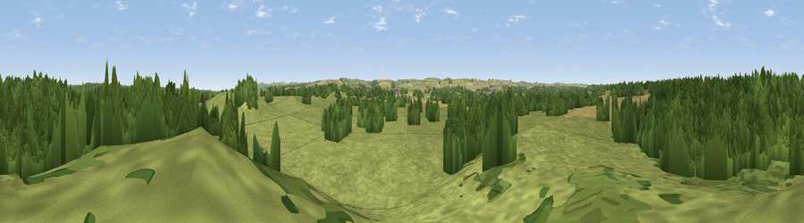

Viewpoint near Moreton
#39745 in England · top 87% of its area beats it · near MoretonWhere it is
The exact computed spot (SY 79875 87775). Click the marker for map links.
The view, rendered

A 360° render of this exact spot computed from the terrain model, tree cover and land cover — summer colours, afternoon light, calibrated against photographs of famous viewpoints. Real trees, hedges and buildings will differ in detail.
The panorama
Grey silhouette: terrain skyline in each direction (720 bearings, Earth curvature and refraction included). Dashed green: skyline with trees (+15 m) and buildings (+8 m) as obstacles. Blue strip: how far the ground is visible on each bearing.
Where the view opens
Wedge length = distance to the farthest visible ground on that bearing (vegetation-aware). Rings at 10, 25 and 50 km.
What fills the view
48% grassland · 42% woodland · 9% cropland
Angular shares of the visible panorama (visual magnitude), not map area. Landscape diversity 0.42 (0–1 Shannon).
Key numbers
More beautiful places nearby
The staircase of upgrades: each row has a higher view potential than everything closer. Driving times are estimates from straight-line distance, calibrated against real road routing — check an actual route before setting out.
| Place | Direction | Drive | Score |
|---|---|---|---|
| Viewpoint near East Knighton | SSE · 2 km | ~4 min | 43.5 |
| Viewpoint near Tincleton | NNW · 5 km | ~10 min | 51.9 |
| Viewpoint near Owermoigne | SSW · 7 km | ~14 min | 81.0 |
| Chideock Down | S · 7 km | ~14 min | 83.5 |
| Viewpoint near Chaldon Herring | SSW · 7 km | ~14 min | 83.8 |
| Bindon Hill | SSE · 8 km | ~17 min | 84.5 |
| Rings Hill | SE · 10 km | ~19 min | 87.5 |
| Viewpoint near Abbotsbury | W · 24 km | ~39 min | 89.0 |
50.68927, -2.28626 · source: screening · position refined by local search. Computed location — check access rights before visiting.